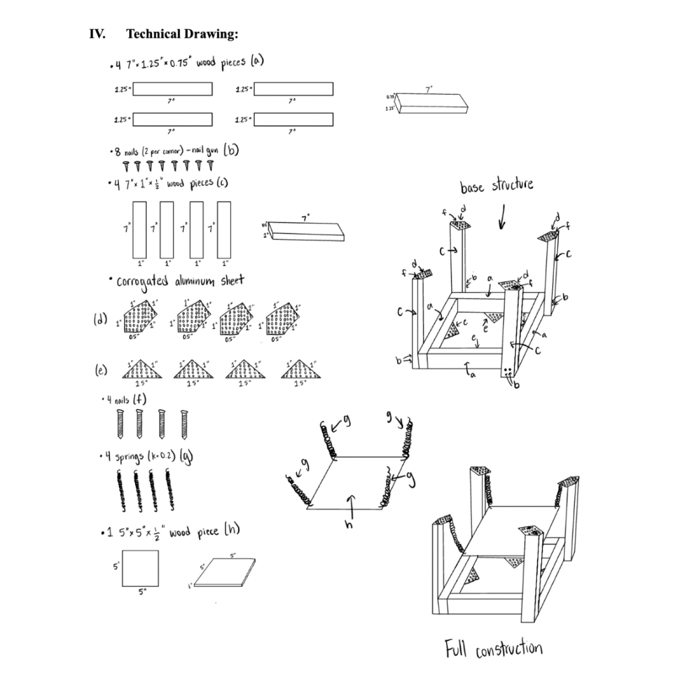
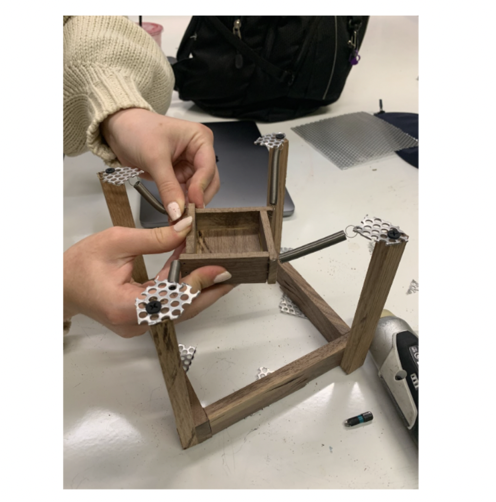
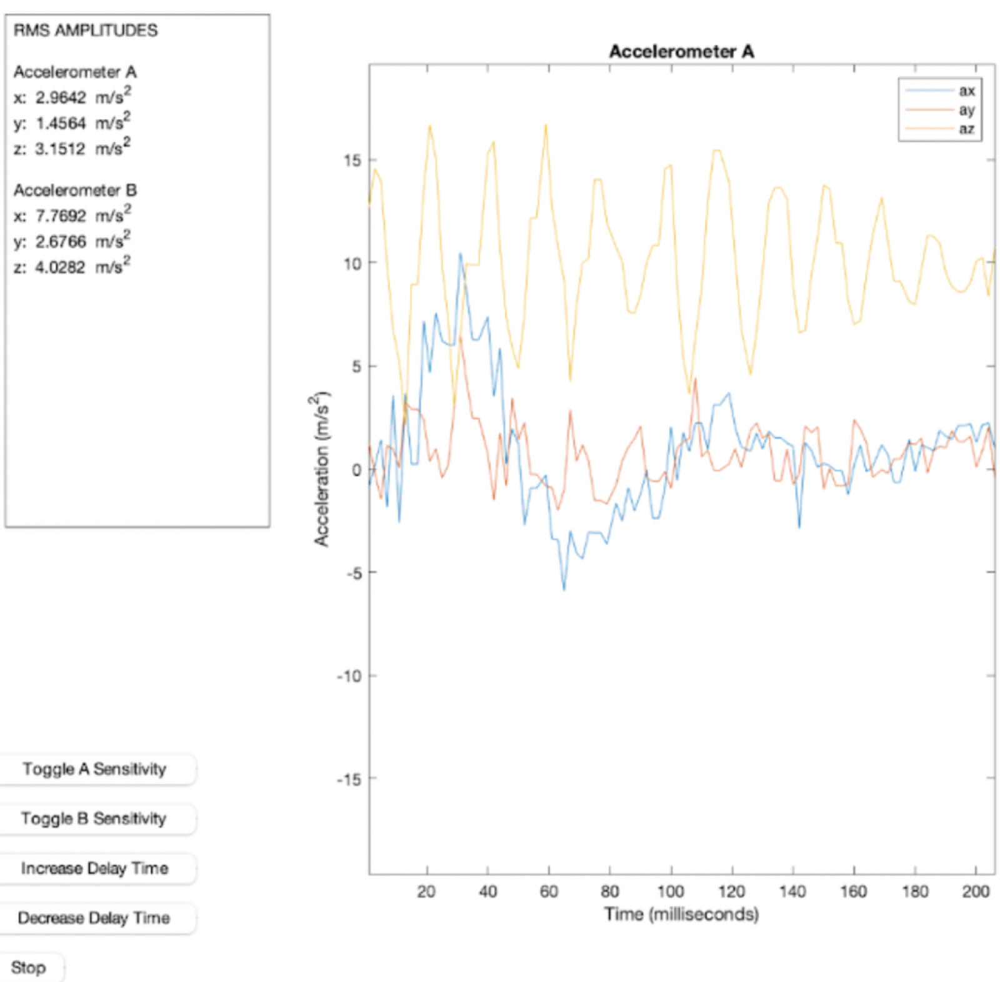

Vibration Isolation System
For this project, my group was tasked with creating a device that could isolate a platform from the vibrations of a shake table. We first developed several design concepts, then unanimously decided to build the device using wood and tension springs.
We used the formula for the natural frequency of an undamped spring-mass system, ωₙ = √(k/m), along with the goal of achieving a low natural frequency, to determine that we should use as large a mass as possible and relatively compliant springs to minimize the platform's natural frequency.


